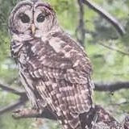

Ardagh Bluffs Trails
Barrie, Ontario

Barred Owl
GPS · tap to connect
N
3D
Satellite
Shaded relief
Street labels
Hillshade
Dynamic Route Builder
Combine connected trails to create your own route
Edit Route
—
Distance
—
Elevation Gain
—
Est. Time
—
Difficulty
Start Navigation
Build a route first
•••
Undo last point
Return to start (loop)
Reverse route
Save route…
Export GPX
Clear route
✕
Map
Trails
Saved
More
Cancel
OK